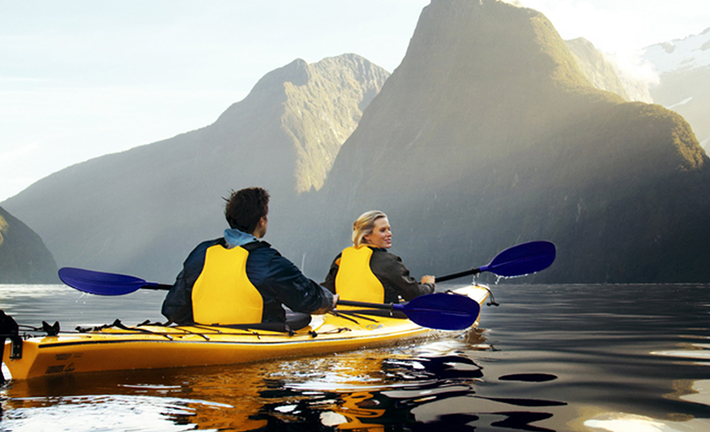
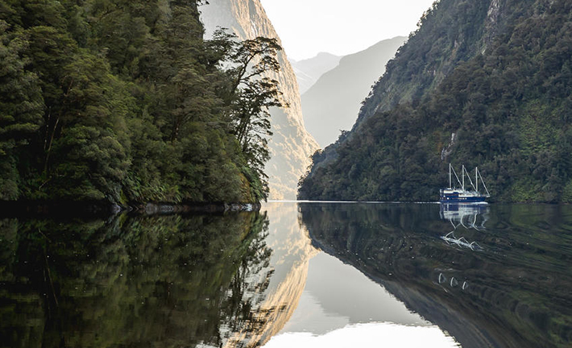
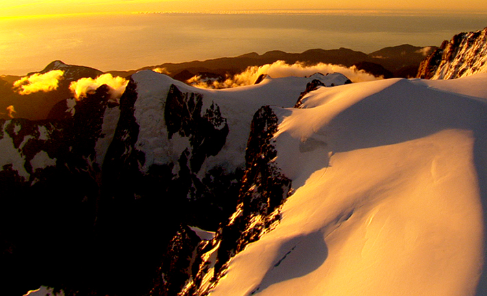
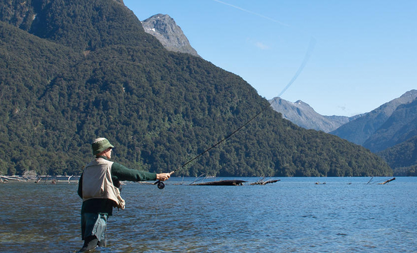
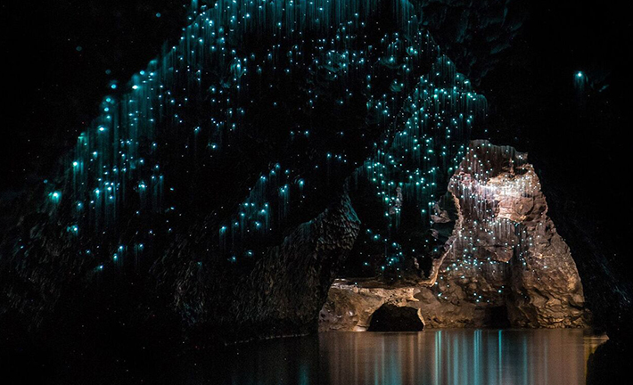

피오르드랜드에서 꼭 체험해야할 10가지
피오르드랜드의 경이로운 자연을 바다와 땅 그리고 하늘에서 체험해보자.
환상적인 피오르드랜드 최고의 즐길 거리 10가지를 소개한다.
-
 01
01헬리콥터로 자연의 아름다움 감상하기
헬리콥터를 타고 더스키사운드/타마테아(Dusky Sound/Tamatea)와 다우트풀사운드/파테아 (Doubtful Sound/Patea)의 상공을 비행하는 잊지 못할 여정으로 숨이 멎을듯한 감동을 선사한다. 최고의 피오르드랜드 헬리콥터 투어와 함께 피오르 중 가장 크고 화려한 더스키사운드와 다우트풀사운드의 아름다운 풍경을 감상해보자.
두 번의 고산 착륙을 통해 상쾌한 공기를 마시고 웅장한 자연의 아름다움과 고요를 만끽할 수 있다. -

02
카약을 타고 피오르드랜드 탐방하기
카약은 피오르드랜드를 여행하기에 아주 좋은 방법으로 평화로운 사운드의 이곳저곳을 탐방하고 희귀한 야생동물들을 가까이에서 관찰할 수 있다. 밀포드사운드/피오피오타히(Milford Sound/Piopiotahi)에서는 1시간 투어부터 종일 투어까지 다양한 카약 투어를 선택할 수 있으며, 1박 크루즈를 하며 카약을 즐길 수도 있다. 이 지역에서 긴 휴가를 보낼 예정이라면실제 nz 카약(RealNZ Kayaks)가 제공하는 수일간의 투어에 참여해보자.
카약을 타고 다우트풀사운드/파테아를 통과하고 야생에서 캠핑을 즐기는 경험을 선사한다. -

03
사운드의 잔잔한 물 위에서 하룻밤 보내기
오버나이트 보트 크루즈를 이용하면 밀포드사운드나 다우트풀사운드의 깊은 곳까지 여행할 수 있다. 이 두 사운드에서 하늘을 찌를 듯한 봉우리와 거대한 피오르를 감상하고, 큰돌고래, 물개, 펭귄을 찾아보자.
크루즈가 잔잔한 만에 닻을 내리면 카약이나 작은 보트를 타고 해안선을 따라 탐험을 할 수도 있다. 개인 객실과 저녁 및 아침 식사가 포함되며, 테아나우나 퀸스타운에서 출발하는 교통편을 이용할 수 있다. -

04
영화 '아타훼누아' 관람하기
‘아타 훼누아-섀도랜드’(Ata Whenua-Shadowland)는 피오르드랜드의 절경을 고스란히 담은 32분 길이의 영화이다. 간단히 말해, 놓쳐서는 안 될 영화다. 헬리콥터로만 가볼 수 있는 청정 무구한 산과 호수, 강과 우림으로 관람객을 안내한다. 시간이 넉넉하다면 이 아늑한 피오르드랜드 시네마(Fiordland Cinema) 에서 상영하는 다른 최신 영화를 감상하고, 하루의 여정을 마친 후 블랙 독 바(Black Dog Bar)에서 휴식을 즐겨보자.
-
 05
05자연속에서 하이킹 즐기기
뉴질랜드에 있는 9개의 그레이트 워크 중 밀포드 트랙(Milford Track), 케플러 트랙(Kepler Track), 루트번 트랙(Routeburn Track)이 광대한 자연의 아름다움을 고스란히 간직한 피오르드랜드에 자리하고 있다. 트랙을 완주하는 데 각각 3-4일이 소요되며, 트랙을 따라 위치한 산장(헛)이나 텐트에서 숙박할 수 있다. 피오르드랜드를 두발로 경험할 수 있는 방법이 수일 동안의 하이킹만 있는 것은 아니다. 레이크마리안(Lake Marian), 키서밋(Key Summit), 럭스모어서밋(Luxmore Summit)과 같은 반나절 하이킹과 종일 하이킹 코스도 아주 많다. 여행 일정과 체력에 따라 자신에게 맞는 트랙을 골라보자. 홀로 자유롭게 걷거나 가이드의 안내를 받으며 걸을 수도 있다.
-

06
낚시하기
피오르드랜드에서는 개인의 기호에 따라 민물 낚시와 바다 낚시를 즐길 수 있다. 피오르드랜드 국립공원과 접해 있는 아름다운 와이아우강(Waiau River)은 무지개송어와 브라운송어가 잘 잡히는 곳이다. 피시 젯 NZ(Fish Jet NZ)에서 송어 낚시와 제트보트를 결합한 멋진 당일 투어를 제공하고 있다. 바다 낚시를 선호한다면 청대구, 성대, 참치 등이 풍부한 피오르드랜드의 청정 해안을 찾아가자.
-

07
신비한 테아나우 반딧불 동굴 방문하기
테아나우 호수의 서쪽 호반에 자리한 테아나우 반딧불 동굴(Te Anau Glowworm Caves)은 1만 2천년이 넘는 세월동안 강물에 의해 끊임없이 깎여진 자연의 조각품이다. 관광 보트를 타고 테아나우 호수를 가로질러 석회암과 소용돌이 그리고 우레같이 쏟아지는 지하 폭포가 있는 깊은 곳으로 떠나자. 작은 펀트배에 올라 동굴 안으로 더 들어가면 수천 마리의 반딧불이가 머리 위에서 반짝이는 장관을 볼 수 있다. 리얼 저니스(Real Journeys)가 제공하는 이 투어는 2시간 가량 소요되며 남녀노소 누구나 참가 가능하다.
-
 08
08고유 야생동물 관찰하기
피오르드랜드에는 뉴질랜드에서 가장 희귀한 고유종 조류가 다수 서식하고 있는데 테아나우 조류 보호구 (Punanga Manu o Te Anau Bird Sanctuary)를 방문하면 이 새들을 가까이에서 관찰할 수 있다. 날지 못하는 타카헤(Takahē)와 숲 앵무새인 카카(Kaka)를 만나보자.
또 다른 볼거리인 일명 타와키(Tawaki)라 불리는 피오르드랜드펭귄(Fiordland Crested Penguin)은 번식기인 7월부터 11월 사이에 피오르 전역에서 관찰된다. 또한 마오리어로 코로라(Korora)라 불리는 세계에서 가장 작은 펭귄인 쇠푸른펭귄(Little Blue Penguin)도 이곳에서 만날 수 있다. 이외에도 물개, 큰돌고래, 케아새 등이 이 지역에 서식한다. -
 09
09피오르드랜드의 수중 세계 탐험하기
뉴질랜드의 산호 수도에서 스쿠버 다이빙을 하며 수중의 경이로운 풍경을 감상하고 피오르드랜드 최고의 체험을 만끽해보자. 세계에서 가장 독특한 스쿠버 다이빙 장소 중 하나인 밀포드사운드/피오피오타히 해양 보호구에서는 심해에서만 서식하는 흑산호를 볼 수 있다.
만약 물속에 들어가지 않고 밀포드사운드의 수중 세계를 경험하고 싶다면 밀포드사운드 수중전망대 (Milford Sound Underwater Observatory)를 방문해보자. 해수면 10미터 아래에 위치한 수중 전망실에서 희귀한 흑산호를 관찰하고 밀포드사운드의 역사, 생태, 지질에 대해 배울 수 있다.
-
 10
10테아나우 호수에서 크루즈 타기
히든 핸킨슨(Hidden Hankinson) 투어와 함께 사람의 발길이 닿지 않는 곳으로 호수 크루즈를 떠나자. 전세 보트를 타고 테아나우 호수에서 크루즈를 즐긴 후 훼손되지 않은 대자연으로 하이킹을 떠난다. 낚시를 하고 토종 장어에게 직접 먹이를 줄 수 있는 기회도 제공된다.
페이스 인 피오르드랜드(Faith in Fiordland)는 스코틀랜드에서 제작된 모터 요트인 페이스호를 타고 떠나는 여유로운 투어를 제공한다. 테아나우 호수에서 크루즈를 하며 아름다운 자연을 만끽하고, 가이드의 설명을 들으며 피오르드랜드 국립공원을 걸어보자.